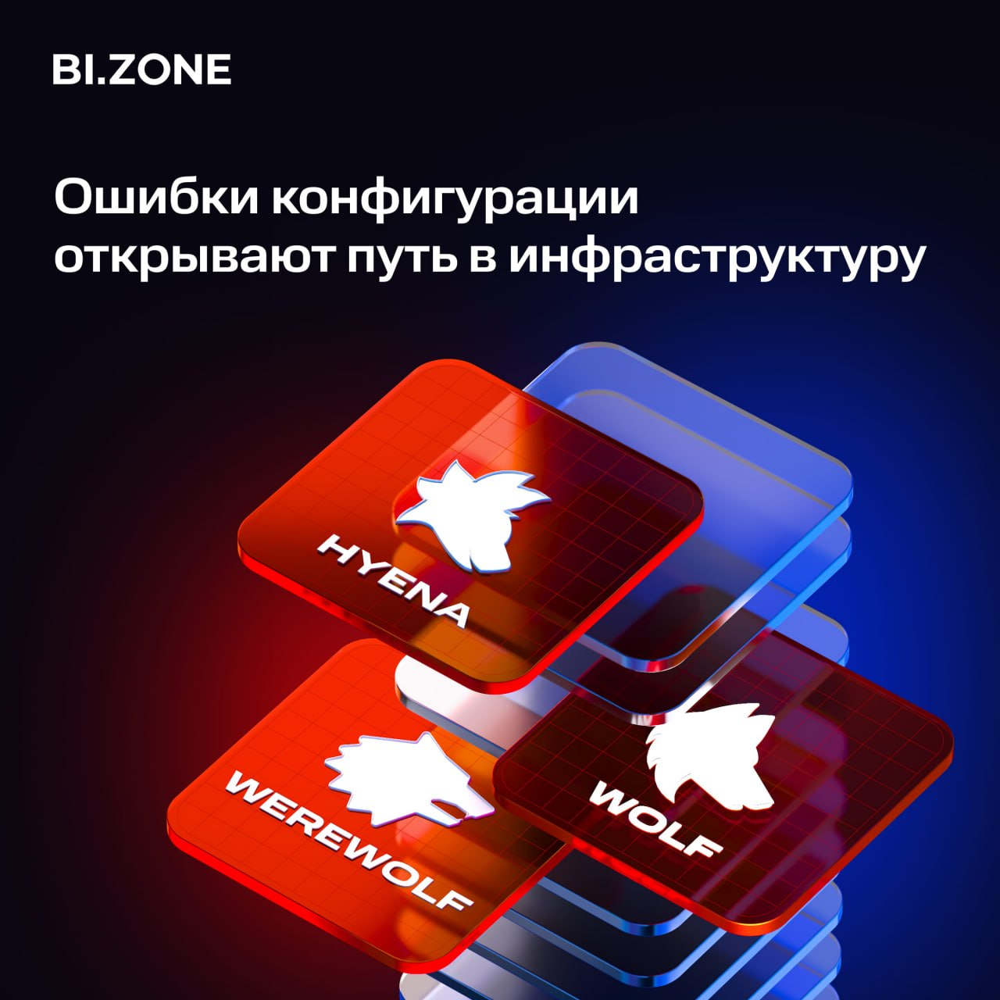

**Одна из главных проблем корпоративной безопасности** — **это отсутствие харденинга и патч-менеджмента **
Наш анализ группировок Hoody Hyena, Rainbow Hyena и Rare Werewolf показывает, что в атаках злоумышленники делают ставку не на сложные эксплоиты, а на типовые ошибки конфигурации Windows- и Linux-инфраструктур.
**Что активно используют?
**
Слабые пароли, небезопасные настройки Active Directory, включенный SMBv1, SSH password authentication, мисконфигурации в механизмах cron, отключенные механизмы защиты Windows и legacy-протоколы.
Особенно часто атакующие эксплуатируют:
🔵отключенные LSA Protection и UAC;
🔵SSH port forwarding и insecure remote access;
🔵legacy-протоколы вроде Telnet, FTP и SMBv1.
Что интересно, Rainbow Hyena продолжает использовать ProxyLogon и ProxyShell — уязвимости Microsoft Exchange, которым уже несколько лет. Это доказывает важность регулярного аудита мисконфигураций и харденинга инфраструктуры.
Чтобы обнаруживать слабые участки IT-инфраструктуры, используйте решение класса EDR. Например, [BI.ZONE EDR](https://bi.zone/catalog/products/edr/?utm_source=telegram&utm_medium=post&utm_campaign=edr&utm_content=19.05.2026&utm_term=bi.zone) позволяет выявить на конечных точках недостатки конфигураций ОС и ПО, оценить уровень риска и сформировать рекомендации по их исправлению.
💬 [Мы в MAX](https://max.ru/bizone_channel)
💙 [Мы во «ВКонтакте»](https://vk.com/bi_zone_vk)
